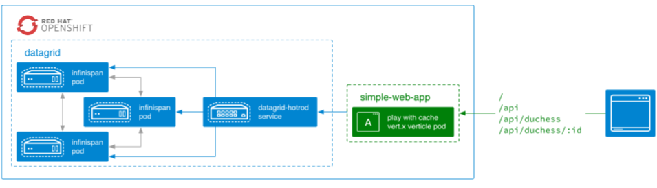

Playground
We will start with a warmup for those that are not familiar with Vert.x, Infinispan and Openshift.
If you ave already played or worked with these frameworks before, you can skip this part.
Ex1 :: Start Openshift and Create an Infinispan Cluster

- Start a cluster with the service catalog
> cd streaming-data-workshop
> ./start-openshift.shdeveloper/developer
- In openshift catalog, choose Infinispan Ephemeral
- Add the following configuration :
APPLICATION_NAME=datagrid NUMBER_OF_INSTANCES=3 MANAGEMENT_USER/MANAGEMENT_PASSWORD=developer/developer - Click Next
- Click Create
- Go to My project
- You should see datagrid deployment with 3 pods and 3 services : datagrid-hotrod, datagrid-http and datagrid-management
 Alternatively, you can deploy de cluster easily from command line :
Alternatively, you can deploy de cluster easily from command line :cd streaming-data-workshop ./start-datagrid.sh - Deploy all the components for the workshop with
./deploy-all.sh - Check the Infinispan Visualizer here
The image here corresponds to the state of 3 instances having data.

Ex2 :: Vert.x and Infinispan Intro
In this section you will learn how to create REST endpoints using vert.x and how to comunicate remotely with a cache. The service should be able to respond now from these URLs:
- TODO 1 Init the client
RemoteCacheManagerusingconfig
Show/Hide Solution - TODO 2 Init the
defaultCachecallingremoteCacheManager.getCache()
Show/Hide Solution - TODO 3 Add the POST route handled by
handleAddDuchessin url/api/duchess
Show/Hide Solution - TODO 4 Implement
handleAddDuchessso that it takes theidand thevaluein the body usingrc.getBodyAsJson()and callsdefaultCache.putAsync(k,v)
Show/Hide Solution - TODO 5 Add the GET route handled by
handleGetDuchessin url/api/duchess/:id
Show/Hide Solution - TODO 6 Implement
handleGetDuchessso that it takes theidusingrc.request().getParamanddefaultCache.getAsync(k)
Show/Hide Solution - Redeploy with
./redeploy.sh - Test POST with
curl -H "Content-Type: application/json" -X POST -d '{"id":1,"name":"Oihana"}' http://simple-web-app-myproject.127.0.0.1.nip.io/api/duchess - Test GET with
curl -X GET -i -H "Accept: application/json" http://simple-web-app-myproject.127.0.0.1.nip.io/api/duchess/1
Show/Hide Final Solution
Streaming Data
Ex3 :: Start
- Go to the board : front-end app
- An empty map should be displayed
Ex4 :: Collect data
In this section we are going to import in a reactive and real-time way a file that contains data. This code would work connecting to a remote web-service or any other data source. The data collected in the files are real data coming from an real API on Swiss Transport.
Make data injection work

- Open StationsInjector
- Implement
injectmethod with RxJavarouter.get(STATIONS_INJECTOR_URI).handler(this::inject); private void inject(RoutingContext ctx) { vertx. < RemoteCache < String, Stop>>rxExecuteBlocking(fut -> fut.complete(client.getCache(STATION_BOARDS_CACHE_NAME))) // Remove data on start, to start clean .map(stations -> fromFuture(stations.clearAsync()).to(x -> stations)) .subscribe(stations -> { vertx.setPeriodic(5000L, l -> vertx.executeBlocking(fut -> { log.info(String.format("Progress: stored=%d%n", stations.size())); fut.complete(); }, false, ar -> {})); // TODO 1: Get an observable for "cff-stop-2016-02-29__.jsonl.gz" file calling the method rxReadGunzippedTextResource // TODO 2: map each entry into a tuple of String/Stop with StationsInjector::toEntry // TODO 3. flatMap each entry to stored it in the stations cache calling putAsync and using Observable.from // TODO 4. subscribe Actions.empty() and log an error happened ctx.response().end("Injector started"); }); }- TODO 1 Get an observable for "cff-stop-2016-02-29__.jsonl.gz" file calling the method
rxReadGunzippedTextResource
Show/Hide Solution - TODO 2 map each entry into a tuple of String/Stop with
StationsInjector::toEntry
Show/Hide Solution - TODO 3 map each entry into a tuple of String/Stop with
StationsInjector::toEntry
Show/Hide Solution - TODO 4 subscribe Actions.empty() and log an error happened
Show/Hide Solution
- TODO 1 Get an observable for "cff-stop-2016-02-29__.jsonl.gz" file calling the method
./redeploy.sh- Force the injection start the injection with
curl http://workshop-main-myproject.127.0.0.1.nip.io/inject - Go to the visualizer and see data being loaded
Ex5 :: Transport data

- Open DelayedListener class in the delayed-listener module
- Implement
injectmethod with continuous queryprivate void addContinuousQuery(RemoteCache< String, Stop> stations) { // TODO 1 - Create QueryFactory with Search class for the stations cache // TODO 2 - Create query for Stop where 'delayMin' is bigger than 0 using the QueryFactory // TODO 3 - Create continuous query listener and override result joining // TODO 4 - Publish each new Stop to the "delayed-trains" address via Vertx eventbus // TODO 5 - Store asynchronously Stop's train name into DELAYED_TRAINS_CACHE_NAME cache // TODO 6 - Get continuous query, remove any previous listeners, and join query with listener }- TODO 1 Create
QueryFactorywithSearchclass for the stations cache
Show/Hide Solution - TODO 2 Create query for
Stopwhere delayMin is bigger than 0 using theQueryFactory
Show/Hide Solution - TODO 3 Create continuous query listener
new ContinuousQueryListener< String, Stop>and overrideresultJoiningmethod
Show/Hide Solution - TODO 4 Implement the
resultJoiningmethod so that it publish each new Stop to the "delayed-trains" address via Vertx eventbus
Show/Hide Solution - TODO 5 Finish the
resultJoiningmethod implementation storing asynchronously Stop's train name into DELAYED_TRAINS_CACHE_NAME cache
Show/Hide Solution - TODO 6 Finish the
addContinuousQuerymethod getting continuous query from thestationscache withSearchclass, removing any previous listeners, and adding the query with the listener
Show/Hide Solution
- TODO 1 Create
./redeploy.sh- Go to delated-dashboard module and launch
DelayedDashboardmain - Monitor the delayed trains !
Ex6 :: Delayed trains positions

- Open DelayedTrains class in the delayed-trains module
- Implement
getTrainIdmethodprivate String getTrainId(Map.Entry< String, String> entry, RemoteCache< String, TrainPosition> positionsCache) { if (!entry.getValue().isEmpty()) return entry.getValue(); // TODO 1 - Create a query factory from the positions cache using Search // TODO 2 - Create a Ickle query with the query factory. Ickle query are JPA like syntax queries. You should get trains ids for all trains positions with a given train name // TODO 3 - Call the query and get the result // TODO 4 - If multiple train positions are returned, just pick the first one and cache it in trainIds collection return null; }- TODO 1 Create a
QueryFactoryfrom thepositionCacheusingSearch
Show/Hide Solution - TODO 2
Create a Ickle query with the query factory. Ickle query are JPA like syntax queries.
Un example of query :
select tx.transactionId, tx.amount, tx.description from com.acme.Transaction tx where amount > 10 and description = :desc.
The parameterdescis replaced usingsetParametermethod.
Create a query to get trains ids for all trains positions with a given train name.
Show/Hide Solution - TODO 3 Call the query and get the result
Show/Hide Solution - TODO 4 If multiple train positions are returned, just pick the first one and cache it in
trainIdscollection
Show/Hide Solution
- TODO 1 Create a
./redeploy.sh- Go to the board front-end app
- Monitor delayed trains !